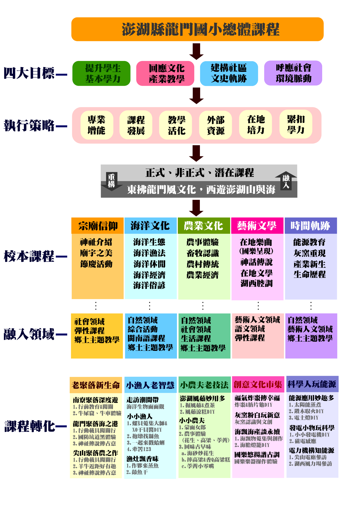

一所偏鄉小校對於文化與自我省思的反動龍門國小位處澎湖縣本島之郊區，離近馬公市區約二十分鐘車程，為規模六 班，學生數僅67人的偏遠小校，受限於偏鄉工作機會的匱乏與少子化因素，學生人數持續下探；學區包含以漁業為主要經濟活動的龍門村，以 及農業為主要經濟活動的尖山村，鄰近澎湖唯一的火力發電廠—尖山電廠；在檢視既有環境條件與學校發展現況後，擬從以下五個觀點著眼，配 合學校既有的鄉土主題教學活動、特色課程等，規劃學校特色遊學的總體課程架構(如前頁圖)，並轉化為「東拂龍門風文化，西遊澎湖山（註） 與海」的特色遊學方案。
學校發展總體課程規劃(如下圖)與特色遊學計畫時，計有四大目標，分別為提升學生基本學習力、回應文化產業教學 、建構社區文史軌跡與呼應社會環境脈動等，為達成此目標，擬運用以下執行策略。
本章節主要闡述學校內外人力與物力資源、鄰近社區概況優勢及觀光景點資源等，並評估社區能量與後續經營推廣之 可行性。本校可以支援的校內外人力充足。各社區、協會都有穩定的運作團隊， 都有許多體驗和遊學活動接待的經驗，校內外人力建立良好的合作默契。
本校學校本位課程是考量學區產業特性、文史傳說與社區資源等發展而來，採學校正式課程融入本位課程、特色遊學 課程雙學歷的方式進行規劃，將本位課程轉化成特色遊學的方案，分別為文史傳說與宗廟文化為主軸的老聚落新生命、以海洋教育為主軸的小漁人 老智慧、以農業傳承為主軸的小農夫老技法，以傳統特色文化為主軸創意文化市集，以及以時代脈動與社區資源為主軸的科學人玩能源。
一、遊學客層定位：以本校為中心的鄰近聚落、文化產業與天然資源豐富且多元，貨櫃、遊客碼頭陸續營運，觀光旅遊潛力 十足，然較缺少教育、文化的系統性介紹，而本計畫是以本校校本課程進行轉化，教材內容設計先以小學生為著眼，故本年度遊學客層定位於國小親 、師、生，待來年產業發展較為成熟後，再行開發社會各客群進行遊學。
二、推廣與行銷方式：遊學與產業並重